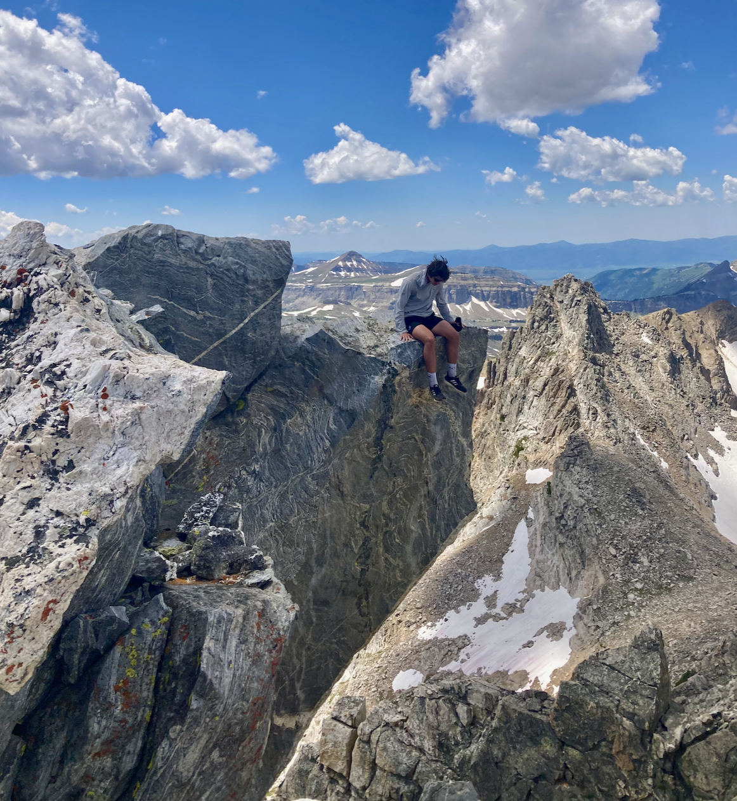
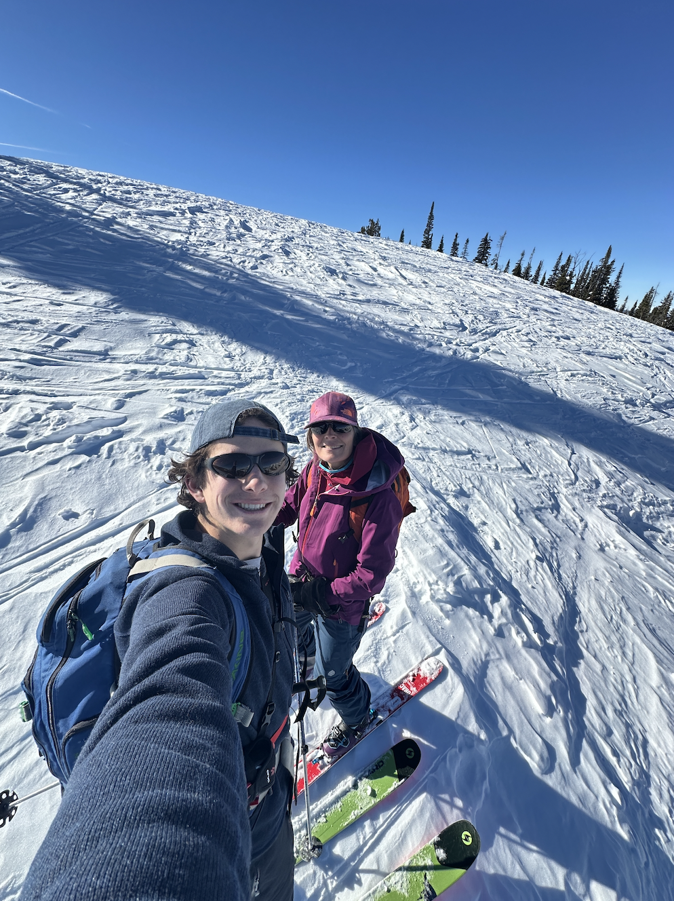
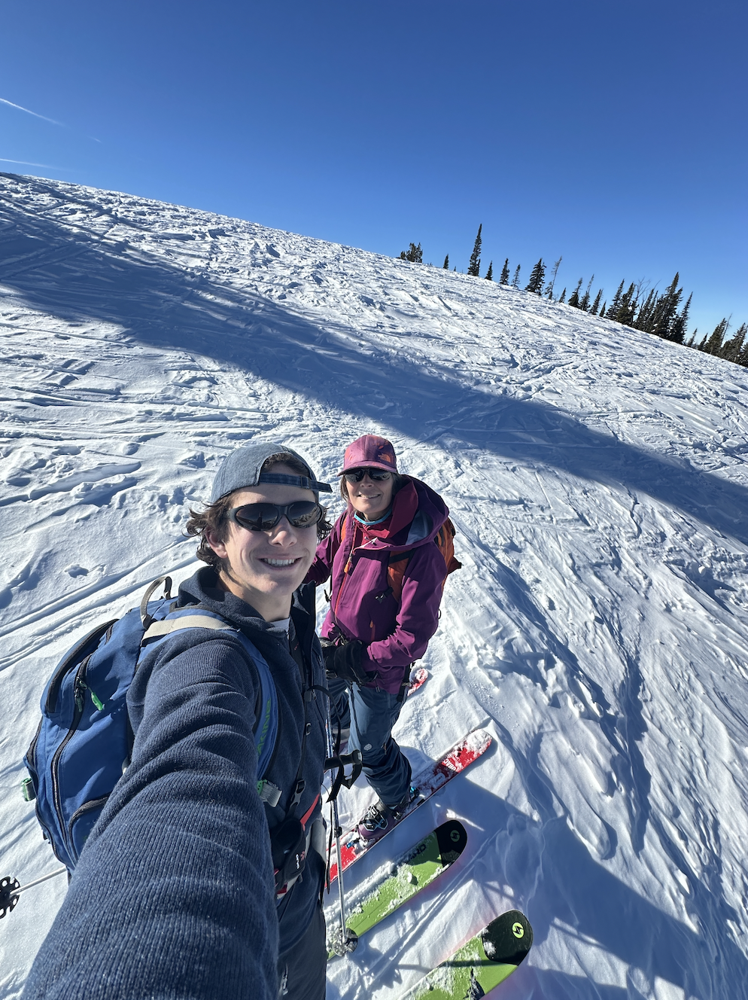
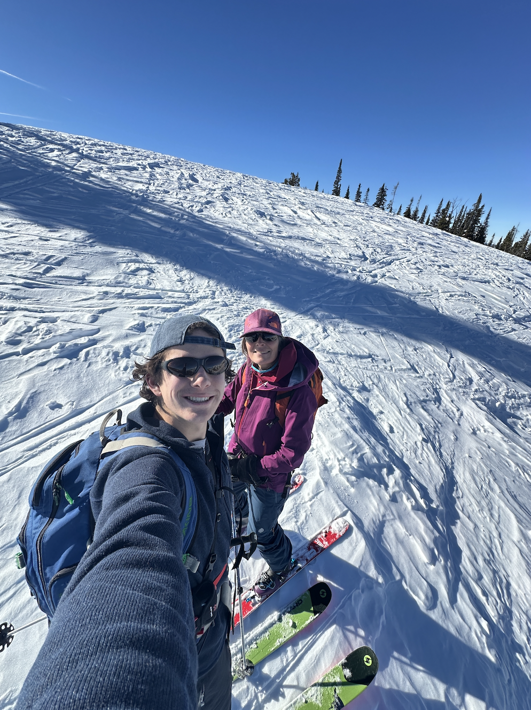

What I'm up to
-
Pursuing dual degree in Computer Science and Mathematics at MIT.Interested in many topics, including embodied intelligence, software performance, and ML/inference. I will be graduating in Spring 2026.
-
Research in robotics and embodied intelligence at MIT CSAIL.In spring, summer, and fall 2025 I have done research in training robots in simulation to have zero-shot generalization to real-world tasks. This involves both model design and simulator development to improve training and evaluation quality in sim.
-
Software engineering intern at LinkedIn.I spend the summer of 2024 at LinkedIn, working on data infrastructure and provisioning. I completed a project that involved creating a one-click sandbox to spin up a LinkedIn tool with Microsoft Azure services.
Personal Interests
Outside of the classroom and lab, I am on the soccer team at MIT, where I play center back. I also enjoy any form of exploration and adventure, whether that is travelling to a foreign country or hiking in the mountains of my hometown, Jackson, WY. I also am working on learning guitar, and I enjoy reading and running.

 

